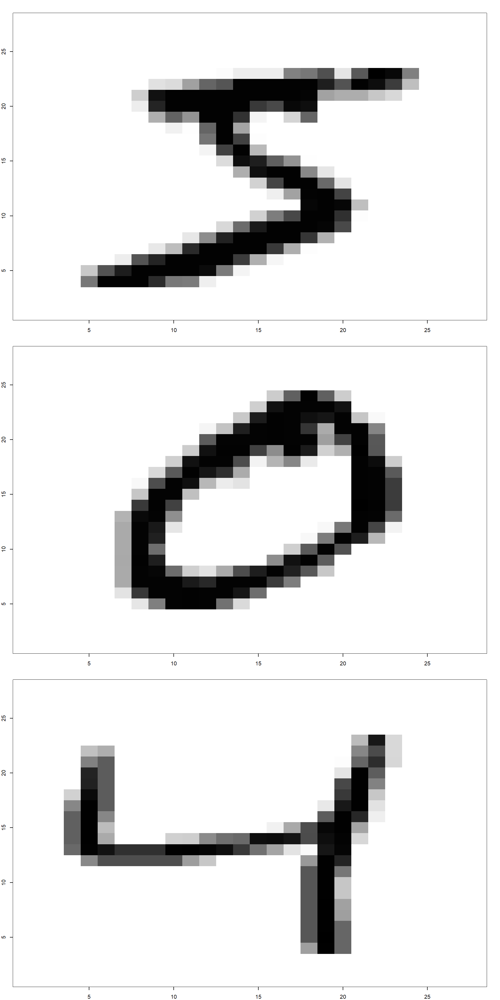
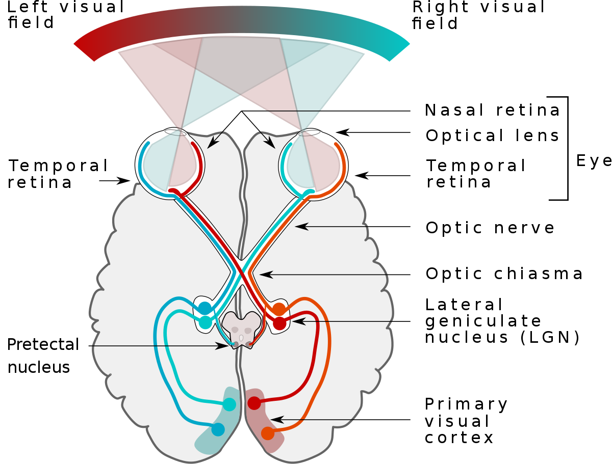
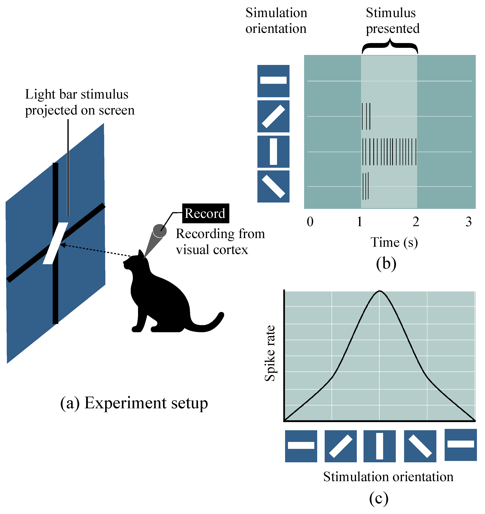
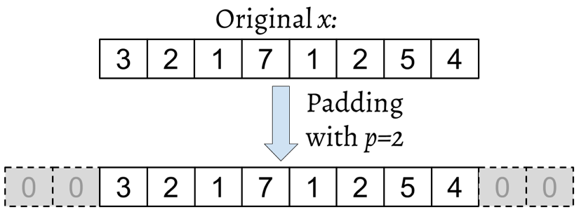
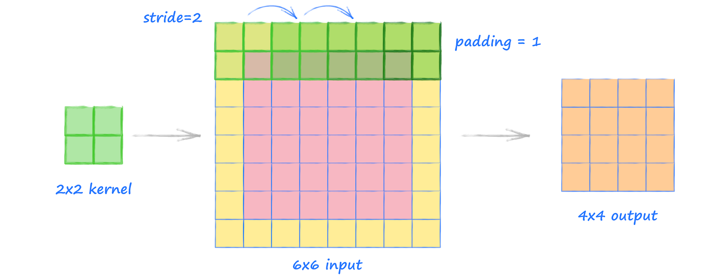

{kind=link}

Deep Learning
Unidad 3: Redes Neuronales Convolucionales (CNN)
1 Redes Neuronales Convolucionales
1.1 Los bloques con los que se construyen las CNNs
Las CNNs son una familia de modelos que fueron originalmente inspirados por cómo funciona el cerebro humano al reconocer objetos.
Esquema del sistema óptico humano
1.1.1 La corteza visual humana
El descubrimiento original de cómo la corteza visual de nuestro cerebro funciona fue hecho por Hubel y Wiesel (1959), a través de la inserción de un microelectrodo en la corteza visual de un gato anestesiado.
Observaron que las neuronas cerebrales responden de forma diferente después de proyectar diferentes patrones de luz en frente del gato.
Esto eventualmente llevó al descubrimiento de las diferentes capas de la corteza visual.
Mientras que la capa primaria detecta principalmente bordes y líneas rectas, las capas superiores se enfocan más en extraer patrones y formas complejas.

1.1.2 Algo de historia
El desarrollo de las CNNs se remonta a los años 90, cuando Yann LeCun y sus colegas propusieron una nueva arquitectura de red neuronal para clasificar dígitos escritos a mano desde imágenes Handwritten Digit Recognition with a Back-Propagation Network (LeCun et al. 1989), publicado en la conferencia de Sistemas de Procesamiento de Información Neural (NeurIPS).
Debido al rendimiento sobresaliente de las CNNs para tareas de clasificación de imágenes, este tipo particular de red neuronal feedforward ganó mucha atención y condujo a mejoras tremendas en los sistemas de aprendizaje de máquinas en evolución.
Varios años más tarde, en 2019, Yann LeCun recibió el premio Turing (el premio más prestigioso en la ciencia de computadoras) por sus contribuciones al campo de la inteligencia artificial (IA), junto con otros investigadores, Yoshua Bengio y Geoffrey Hinton.
Las Convolutional Neural Networks o CNNs, son un tipo especial de redes neuronales para procesar datos que tienen una topología en forma de cuadrícula conocida. Como por ejemplo, series de tiempo, que pueden ser pensados como una malla 1-dimensional que toman datos a intervalos regulares, datos de imagen, que pueden ser pensados como una malla 2-dimensional.
Este tipo de redes neuronales ha sido muy exitoso en la industria y práctica.
El nombre red neuronal convolucional indica que la red utiliza una operación matemática especifica: la convolución, esta es un tipo especial de operación lineal.
Las redes neuronales convolucionales son simplemente redes neuronales que usan convolución en lugar de una multiplicación matricial en al menos una de sus capas
2 CNNs y las jerarquías de características
La exitosa extracción de características relevantes es clave para el rendimiento de cualquier algoritmo de aprendizaje automático y los modelos de aprendizaje automático tradicionales dependen de las características que pueden venir de un experto en el dominio o que se basan en técnicas computacionales de extracción de características.
-
Las CNNs son capaces de aprender automáticamente las características de los datos en bruto que son más útiles para una tarea específica. Por esta razón, es común considerar las capas de las CNNs como extractores de características:
las capas iniciales (justo después de la capa de entrada) extraen características de bajo nivel de los datos en bruto,
y las capas posteriores, a menudo completamente conectadas (fully connected) como en un perceptrón multicapa (MLP) utilizan estas características para predecir un valor objetivo continuo o una etiqueta de clase.
Ciertos tipos de NNs multicapas, y en particular, las redes neuronales convolucionales profundas (deep CNNs), construyen lo que se llama una jerarquía de características combinando las características de bajo nivel en una secuencia de capas para formar características de alto nivel.
Si se quiere preservar la información espacial de una imagen u otra forma de datos, entonces es conveniente representar cada imagen con una matriz de píxeles.
Una forma simple de codificar la estructura local es conectar una submatriz de neuronas de entrada adyacentes en una única neurona oculta que pertenece a la siguiente capa. Esa única neurona oculta representa un campo receptivo local.
Esta operación se denomina convolución, y es de donde se deriva el nombre para este tipo de red.
Una forma intuitiva de pensar en la convolución es como el tratamiento de una matriz por otra matriz, a la que se le llama kernel.
Ejemplo
Por ejemplo, si estamos tratando con imágenes, entonces las características de bajo nivel, como bordes y manchas, se extraen de las capas anteriores, las cuales se combinan para formar características de alto nivel. Estas características de alto nivel pueden formar formas más complejas, como los contornos generales de objetos como edificios, gatos o perros.
Una CNN calcula mapas de características de una imagen de entrada, donde cada elemento proviene de un parche local de píxeles en la imagen de entrada:

-
Supongamos que el tamaño de cada submatriz es de \(5 \times 5\) y que esas submatrices se utilizan con imágenes MNIST de \(28 \times 28\) píxeles. Entonces seremos capaces de generar \(24 \times 24\) neuronas de campo receptivo local en la capa oculta. De hecho, es posible deslizar las submatrices solo 23 posiciones antes de tocar los bordes de las imágenes.
En
TensorFlow, el número de píxeles a lo largo de un borde del kernel o submatriz, es el tamaño del kernel,y la longitud del paso es el número de píxeles por los cuales el kernel se mueve en cada paso de la convolución.
Definamos el mapa de características de una capa a otra. Por supuesto, podemos tener múltiples mapas de características que aprenden independientemente de cada capa oculta. Por ejemplo, podemos empezar con \(28 \times 28\) neuronas de entrada para procesar imágenes
MNIST, y luego definir \(k\) mapas de características de tamaño \(24 \times 24\) neuronas cada uno (nuevamente con forma de \(5 \times 5\)) en la siguiente capa oculta.
Típicamente, las CNNs están compuestas por varias capas convolucionales y de submuestreo (pooling) que son seguidas por una o más capas fully connected al final. Las capas fully connected son esencialmente un MLP, donde cada unidad de entrada, \(i\), está conectada a cada unidad de salida, \(j\), con un peso \(w_{ij}\).
Las capas de submuestreo (pooling), comúnmente conocidas como capas de agrupamiento (pooling layers), no tienen parámetros que se puedan aprender; por ejemplo, no hay unidades de peso o sesgo en las capas de pooling. Sin embargo, tanto las capas convolucionales como las fully connected tienen pesos y sesgos que son optimizados durante el entrenamiento.
Esquema de una CNN
2.1 Convolución
En su forma general, la convolución es una operación sobre dos funciones con argumentos reales.
Supongamos que estamos rastreando la ubicación de una nave espacial con un sensor láser. Nuestro sensor láser nos entrega una sola salida \(x(t)\), la posición de la nave espacial en el tiempo \(t\), en donde \(x\) y \(t\) son valores reales.
Ahora supongamos que nuestro sensor laser es algo ruidoso. Para obtener una estimación menos ruidosa de la posición de la nave, podriamos promediar muchas mediciones, siendo las mediciones más recientes más relevantes, por lo que sería un promedio ponderado que otorga más peso a las observaciones más recientes.
Podemos hacer esto con una función \(w(a)\), donde \(a\) es la edad de la medición. Si deseamos aplicar la operación de ponderación en cada momento, debemos obtener una nueva función \(s\) que entregue una estimación suavizada de la posición de la nave:
\[s(t)=\int x(a)w(t-a)da\] Esta operación es llamada convolución. La operaciónde convolución se denota típicamente como:
\[s(t)=(x * w)(t)\]
En nuestro caso, \(w\) necesita ser una función de densidad de probabilidad válida, sino la salida no sería una ponderación. Además, \(w\) necesita ser 0 para todos los argumentos negativos, o esta función mirará en el futuro. Estas limitaciones son particulares de nuestro ejemplo. En general, la convolución está definida para cualquier función para que la integral anterior está definida, y puede ser ocupada con otros fines.
En este contexto, el primer argumento (\(x\)) se le llama input y el segundo argumento (\(w\)) se le llama kernel, y a la salida se le llama feature map
En nuestro ejemplo, la idea de que el sensor láser entregue medidas en cada instante de tiempo no es realista, pues trabajamos con una discretización del tiempo, usualmente a tiempos regulares. Así, tendremos:
\[s(t)=(x*w)(t)=\sum_{a=-\infty}^{\infty}x(a)w(t-a)\]
Frecuentemente usamos convoluciones sobre más de un eje en un tiempo especifico. Por ejemplo, si usamos una imagen 2-dimensional \(I\) como input, probablemente desearemos usar un kernel \(K\) 2-dimensional:
\[S(i,j)=(I*K)(i,j)=\sum_m \sum_n I(m,n)K(i-m,j-n)\]
La convolución es conmutativa, esto significa que equivalentemente podemos escribir:
\[S(i,j)=(K*I)(i,j)=\sum_m \sum_n I(i-m,j-n)K(m,n)\]
2.1.1 Motivación
El parche local de elementos que participan de la convolución, se conoce como el campo receptivo local. Las CNNs generalmente se desempeñan muy bien en tareas relacionadas con imágenes, y eso se debe en gran medida a tres ideas importantes:
Conectividad dispersa (sparse connectivity): Un único elemento en el mapa de características está conectado solo a un pequeño parche de píxeles. (Esto es muy diferente de conectar a toda la imagen de entrada como en el caso de los perceptrones.
Compartir parámetros (parameter sharing): Los mismos pesos se utilizan para diferentes parches de la imagen de entrada.
Representación equivariante (equivariant representation): Desplazar la señal de entrada resulta en una señal de salida igualmente desplazada. La mayoría de nosotros podemos reconocer rostros específicos bajo una variedad de condiciones porque aprendemos abstracción. Estas abstracciones son, por lo tanto, invariantes al tamaño, contraste, rotación y orientación.
Como consecuencia directa de estas ideas, reemplazar una red fully connected (MLP) convencional por una capa de convolución reduce sustancialmente el número de pesos (parámetros) en la red y veremos una mejora en la capacidad de capturar características inherentes.
En el contexto de los datos de imagen, tiene sentido suponer que los píxeles cercanos son típicamente más relevantes entre sí que los píxeles que están lejos unos de otros.
Además de permitir trabajar con entradas de tamaño variable.
Sparse connectivity
Interacciones escasas o sparse interactions (que también se le refiere como sparse connectivity o sparse weights), viene desde la siguiente idea:
Las capas de una red neuronal tradicional usan multiplicación de matrices por una matriz de parámetros con un parámetro separado que describe la interacción entre cada unidad de entrada y cada unidad de salida.
Esto significa que cada unidad de salida interactúa con cada unidad de entrada. Las redes convolucionales, en cambio, no necesariamente. Este es logrado utilizando kernels más pequeños que la entrada.
Por ejemplo, cuando se procesa una imagen, la entrada podría tener millones de pixeles, pero es posible detectar unas pequeñas pero relevantes características, que al interactuar con el kernel ocupan sólo cientos de pixeles. Esto implica guardar mucho menos parámetros, que reduce la memoria requerida del modelo y mejora su eficiencia estadística.
Sparse connectivity
Parameter sharing y equivariance representation
Esta característica hace referencia a usar los mismos parámetros para más de una función en un modelo. Reduciendo así, el número de parámetros a optimizar y mejorando la eficiencia estadística.
Configurando particularmente los parámetros, podemos obtener la propiedad de representación de equivalencia, que refiere a que si las entradas cambian, las salidas cambian en la misma manera.
Parameter sharing
Importante
En las siguientes diapositivas, estudiaremos las capas convolucionales y de pooling con más detalle y veremos cómo funcionan. Para entender cómo funcionan las operaciones de convolución, empezaremos con una convolución en una dimensión, que a veces se utiliza para trabajar con ciertos tipos de datos secuenciales, como el texto. Después, trabajaremos a través de las convoluciones bidimensionales, que se aplican comúnmente a imágenes.
2.1.2 Convoluciones 1-D
Notación
En esta parte, usaremos subíndices para denotar el tamaño de un arreglo multidimensional (tensor); por ejemplo, \(A_{n_1 \times n_2}\) es un arreglo bidimensional de tamaño \(n_1 \times n_2\). Usamos corchetes, \(\left[ \; \right]\), para denotar la indexación de un arreglo multidimensional.
Por ejemplo, \(A[i, j]\) se refiere al elemento en el índice i, j de la matriz A. Además, observe que usamos un símbolo especial, \(*\), para denotar la operación de convolución entre dos vectores o matrices, lo cual no debe confundirse con el operador de multiplicación, *, que típicamente utilizamos en R o Python.
Una convolución discreta1 para dos vectores, \(x\) y \(w\), se denota por \(y = x * w\), donde el vector \(x\) es nuestra entrada (a veces llamado señal) y \(w\) se llama el filtro o kernel. Una convolución se define matemáticamente de la siguiente manera:
\[ y = x * w \rightarrow y[i] = \sum_{k=-\infty}^{+\infty} x[i - k] \cdot w[k] \]
Como se mencionó anteriormente, los corchetes, [], se usan para denotar la indexación para los elementos del vector. El índice, \(i\), recorre cada elemento del vector de salida, \(y\).
Hay dos puntos a mencionar a partir de la fórmula anterior que deben ser destacados:
índices de \(-\infty\) a \(+\infty\)
indexación negativa para \(x\).
El hecho de que la suma recorra índices de \(-\infty\) a \(+\infty\) parece raro, principalmente porque en aplicaciones de CNN siempre tratamos con vectores de características finitas.
Por ejemplo, si \(x\) tiene 10 características con índices \(0, 1, 2,\ldots, 9\), entonces los índices \(-\infty = -1\) y \(10 : +\infty\) estarían fuera de los límites para \(x\).
Por lo tanto, para calcular correctamente la sumatoria mostrada en la fórmula anterior, se asume que \(x\) y \(w\) están rellenados con ceros. Esto resultará en un vector de salida, \(y\), que también tiene un tamaño infinito, con muchos ceros también. Dado que esto no es útil en situaciones prácticas, a \(x\) se le añaden solo un número finito de ceros.
Este proceso se llama relleno de ceros o simplemente relleno (padding). Aquí, el número de ceros añadidos a cada lado se denota por \(p\). Un ejemplo de relleno para un vector unidimensional, \(x\), se muestra a continuación:
Supongamos que la entrada original, \(x\), y el filtro, \(w\), tienen \(n\) y \(m\) elementos, donde \(m \leq n\). Por lo tanto, el vector rellenado, \(x^{'p}\), tiene tamaño \(n + 2p\). La fórmula práctica para calcular la convolución cambiará a la siguiente:
\[ y = x * w \rightarrow y[i] = \sum_{k=0}^{m-1} x^p[i + m - k] \cdot w[k] \]
Ahora que hemos resuelto el problema del índice infinito, el segundo problema es indexar \(x\) con \(i + m - k\). El punto importante a notar aquí es que \(x\) y \(w\) están indexados en diferentes direcciones en esta sumatoria. Calcular la suma con un índice yendo en la dirección inversa es equivalente a calcular la suma con ambos índices en la dirección hacia adelante después de voltear uno de esos vectores, \(x\) o \(w\), después de que son rellenados. Entonces, simplemente podemos calcular su producto punto. Supongamos que invertimos (rotamos) el filtro, \(w\), para obtener el filtro rotado, \(w^r\). Entonces, el producto punto, \(x[i : i + m] \cdot w^r\), se calcula para obtener un elemento, \(y[i]\), donde \(x[i : i + m]\) es un segmento de \(x\) con tamaño \(m\). Esta operación se repite como en un enfoque de ventana deslizante para obtener todos los elementos de salida. La siguiente figura proporciona un ejemplo con \(x = [3, 2, 1, 7, 1, 2, 5, 4]\) y \(w = \left[ \frac{1}{2}, \frac{3}{4}, 1, \frac{1}{4}\right]\), de modo que los primeros tres elementos de salida se calculan:
En el ejemplo anterior se pueden notar algunos detalles:
El tamaño del padding es cero (\(p = 0\)).
El filtro rotado, \(w^r\), se desplaza dos celdas cada vez que se desliza. Este desplazamiento es otro hiperparámetro de una convolución, el paso o stride, \(s\). En este ejemplo, el stride es dos, \(s = 2\).
El stride debe ser un número positivo menor que el tamaño del vector de entrada.
2.1.3 Padding
Hasta ahora, solo hemos utilizado el zero-padding en las convoluciones para calcular vectores de salida de tamaño finito. Técnicamente, el padding se puede aplicar con cualquier \(p \geq 0\). Dependiendo de la elección de \(p\), las celdas en los bordes pueden ser tratadas de manera diferente a las celdas situadas en el medio de \(x\).
Existen tres modos de padding que se utilizan comúnmente en la práctica: completo (full), mismo (same) y válido (valid):
En modo full, el parámetro de relleno, \(p\), se establece en \(p = m - 1\). El full padding aumenta las dimensiones de la salida; por lo tanto, rara vez se usa en arquitecturas de CNN.
El same padding generalmente se utiliza para asegurar que el vector de salida tenga el mismo tamaño que el vector de entrada, \(x\). En este caso, el parámetro de padding, \(p\), se calcula de acuerdo al tamaño del filtro, junto con el requisito de que el tamaño de entrada y salida sean los mismos.
Finalmente, calcular una convolución usando valid padding se refiere al caso donde \(p = 0\) (sin padding).

2.1.4 Determinando el tamaño de la salida de la convolución
El tamaño de salida de una convolución está determinado por el número total de veces que se puede desplazar el filtro, \(w\), a lo largo del vector de entrada. Supongamos que el vector de entrada es de tamaño \(n\) y el filtro es de tamaño \(m\). Entonces, el tamaño de la salida resultante de \(y = x * w\), con padding, \(p\), y stride, \(s\), se determinaría de la siguiente manera:
\[o = \left\lfloor \frac{n + 2p - m}{s} \right\rfloor + 1\]
Aquí, \(\lfloor \cdot \rfloor\) denota la operación de redondeo hacia abajo (floor). Esta operación devuelve el entero más grande que es igual o menor que la entrada, por ejemplo: \(\text{floor}(1.77) = \lfloor 1.77 \rfloor = 1 \]\)
Implementación
conv1d <- function(x, w, p = 0, s = 1) {
# Invertir el kernel para la convolución
w_rot <- rev(w)
# Preparar el vector de entrada con el relleno inicial
x_padded <- x
if (p > 0) {
# Añadir ceros para el relleno antes y después del vector original
x_padded <- c(rep(0, p), x_padded, rep(0, p))
}
# Inicializar el vector de resultados
res <- numeric()
# Aplicar la convolución con el paso (stride) especificado
for (i in seq(1, length(x_padded) - length(w_rot) + 1, by = s)) {
res <- c(res, sum(x_padded[i:(i + length(w_rot) - 1)] * w_rot))
}
return(res)
}
# Prueba:
x <- c(1, 3, 2, 4, 5, 6, 1, 3)
w <- c(1, 0, 3, 1, 2)
cat("Implementación Conv1d: ", conv1d(x, w, p = 2, s = 1), "\n")Implementación Conv1d: 5 14 16 26 24 34 19 22 import numpy as np
def conv1d(x, w, p=0, s=1):
w_rot = np.array(w[::-1])
x_padded = np.array(x)
if p > 0:
zero_pad = np.zeros(shape=p)
x_padded = np.concatenate([zero_pad, x_padded, zero_pad])
res = []
for i in range(0, int(len(x)/s),s):
res.append(np.sum(x_padded[i:i+w_rot.shape[0]] * w_rot))
return np.array(res)
## Prueba:
x = [1, 3, 2, 4, 5, 6, 1, 3]
w = [1, 0, 3, 1, 2]
print('Implementación de Conv1d: ',
conv1d(x, w, p=2, s=1))Implementación de Conv1d: [ 5. 14. 16. 26. 24. 34. 19. 22.]Resultados de Numpy: [ 5 14 16 26 24 34 19 22]2.1.5 Convolución 2-D
Los conceptos que hemos visto hasta ahora son fácilmente extensibles a 2D. Cuando tratamos con entradas en 2D, como una matriz, \(X_{n1 \times n2}\), y la matriz del filtro, \(W_{m1 \times m2}\), donde \(m1 \leq n1\) y \(m2 \leq n2\), entonces la matriz \(Y = X * W\) es el resultado de una convolución en 2D entre \(X\) y \(W\). Esto se define matemáticamente de la siguiente manera:
\[ Y = X * W \rightarrow Y[i,j] = \sum_{k1=-\infty}^{+\infty} \sum_{k2=-\infty}^{+\infty} X[i - k1,j - k2] \cdot W[k1,k2] \]
Notar que, todas las técnicas mencionadas anteriormente, como el padding, rotar la matriz del filtro, y el uso de strides, también son aplicables a convoluciones en 2D, siempre y cuando se extiendan a ambas dimensiones de manera independiente. La figura siguiente demuestra la convolución en 2D de una matriz de entrada de tamaño \(6 \times 6\), utilizando un kernel de tamaño \(2 \times 2\). La matriz se rellena con ceros con \(p = 1\). Como resultado, la salida de la convolución en 2D tendrá un tamaño de \(4 \times 4\):
3 Referencias
Hubel, David H, y Torsten N Wiesel. 1959. «Receptive fields of single neurones in the cat’s striate cortex». The Journal of physiology 148 (3): 574.
LeCun, Yann, Bernhard Boser, John Denker, Donnie Henderson, Richard Howard, Wayne Hubbard, y Lawrence Jackel. 1989. «Handwritten digit recognition with a back-propagation network». Advances in neural information processing systems 2.
Li, Bin, Yuki Todo, y Zheng Tang. 2022. «Artificial Visual System for Orientation Detection Based on Hubel–Wiesel Model». Brain Sciences 12 (4): 470.

Premiación de LeCun, Hinton y Bengio (de izquierda a derecha)